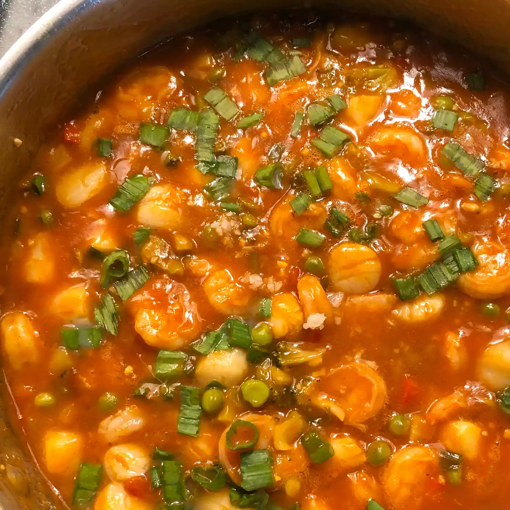

Szechwan Shrimp

Description
Szechuan Shrimp is a spicy Chinese dish with tender shrimp, crisp vegetables, and a bold, tangy sauce flavored with garlic, chilies, and Sichuan peppercorns.
The dish offers a tasty mix of spice, tanginess, and a slight numbing sensation.
Often served with steamed rice, it’s a vibrant favorite for lovers of bold flavors.
Ingredients
- 4 tablespoons water
- 2 tablespoons ketchup
- 1 tablespoon soy sauce
- 2 teaspoons cornstarch
- 1 teaspoon honey
- 1/2 teaspoon crushed red pepper
- 1/4 teaspoon ground ginger
- 1 tablespoon vegetable oil
- 1/4 cup sliced green onions
- 4 cloves garlic, minced
- 12 ounces cooked shrimp, tails removed
Steps
- Stir together water, ketchup, soy sauce, cornstarch, honey, crushed red pepper,
and ground ginger in a small bowl until combined. Set aside.
- Heat oil in a large skillet over medium-high heat.
- Cook and stir green onions and garlic in hot oil until fragrant, about 30 seconds.
- Stir in cooked shrimp; toss to coat with oil.
- Pour in ketchup mixture.
- Cook and stir until sauce is bubbly and thickened.